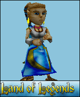
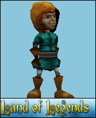
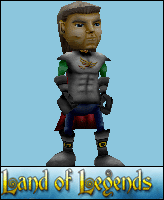
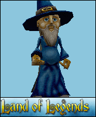
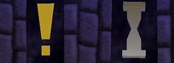
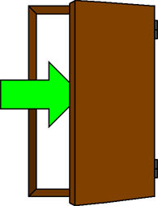
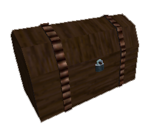

After starting Land of Legends from your Steam Games list, select "Start New Server" from the game menu. From the Map List, you must select "legends" and then press Start at the bottom right of this window. Additional, in the GAME tab you can select the preferences of your game session. Here is a run-through of the commands you may change:
- LAN : Checking this will make your game LAN only. Other players cannot connect to your game through the internet. If you would like to play online, make sure this is untagged.
- Hostname: You can pick a name for your game server.
- Max Players: The maximum amount of players on your server. The default is 4. Important!: Setting it to 1 player can cause problems and crashes. Please use 2 and above, even when you want to play on your own!
- Server Location: Please select the region you live in.
Other settings can be changed at your own discretion. For the best gameplay experience, we would advise you do not change any of these settings.
2. Playing Land of Legends
Land of Legends is different from regular Half-Life and Sven Co-op. To find out more, read the following chapters.
Choosing your character
There are 4 characters in Land of Legends you can choose from. To select your character, go to Options in the game menu and select the Multiplayer Tab. Now under Player Model you can choose one of the following characters:
|
 The Cleric
 The Rogue
|
 The Warrior
 The Wizard
|
The HUD
When you start your game, you will notice the different Heads Up Display. Health and Armor are indicated on the left. The Shield shows your amount of armor. The futher it's filled, the higher your armor is. Your health will be shown as a rough estimation of your current fitness, on 4 different levels:
Uninjured
Lightly injured
|
Badly injured
Near death
|
Quests
|

|
Certain maps need to be completed by doing Quests. You can find quest givers by an exclamation mark above their heads. Approach them to recieve the quest description. When a Quest is pending, an hourglass will be shown. After completing the quest, return to the quest giver to end the assignment.
|
Entering doors
|

|
You can distinguish closed and open doors by this symbol. Walk up to the door with the symbol and you'll pass through it.
|
Enemies and Allies
During your travels through the Lands of Loria you will encounter many enemies, but also friends. If they offer to help you, you can use the USE key (default E) to make them follow you. They will automaticly start attacking enemies. Note that not all allies will follow you.
The Third-person Camera View
Land of Legends has been optimised for the third player camera view. You can select this view mode by pressing "C" by default. You can adjust this key in the Controls menu.
Secret Treasure Chests
|

|
We've hidden 5 secret treasure chests in the game for you to find! |
3. Walkthrough
Stuck? Read the full game walkthrough and continue your travels!
Legends: Start the game by choosing to watch the intro or skipping it.
P01: Talk to the priest. He'll tell you to gather 6 medallions. Go out of the temple and talk to the weapon smith on the right. He'll tell you to get a weapon permit. Now head towards the barracks, go straight and take a left. Down the stairs you'll find Razor in the prison. He wants you to gather 3 items for you. Go back to the hall of the barracks and take a left to go outside. Now go straight and you'll find the apple merchant. Get the apples here. The road leading down to the right leads to the tavern. Talk to the innkeeper and he'll let you take a small keg behind the counter. Now go back to market (near the temple) and find the jewellery seller. She'll give you a green gem. Head back to the prison and give the items to Razor. Now you can go back to the weapon smith and he'll let you take a sword.
Now we can focus on the medallions. You need to bring them back one by one in the right order, starting with white. The next medallion will only appear when you've brought one back. You can find the white one in the well outside of the barracks. Bring it back to the temple and place it on the white slab in the centre. The next one, red, can be found in a crate (look for the red glow) in the house in the centre of the market. You'll need a weapon to smash the crate. Bring the red medallion back and look for the yellow one in the tavern. You can find it upstairs in the middle room on the left. Next one is the orange medallion. It'll appear in the prison where you've met Razor earlier. Bring it back and search for the green medallion in the barracks. Where you normally take a right into the prison, you now take a left. There's a double door to your right with a storage room. Kill the spiders and find the green medallion. Bring it back to the temple and find the last one, blue, in a broken pillar in the barracks. When you bring it back, you're instructed to pull the lever at the altar (in front of the priest). A passageway opens to the right and you can go down. Kill the spiders and pull the lever. Go back up and the shrine is active. An officer will appear and tell you to help push the Orcs back. Exit the temple and take a right through the archway.
P02: Follow the path into the market and follow the soldiers running. They'll lead you to the front gate where a dialog starts. You'll have to convince the Count to open the gate. Go to the left and enter his mansion. He wants you to get a precious personal item. On the right a door opens and the hole in the wall leads to a cave. Kill the goblins and pick up the rocking horse. Bring it back to the moody Count and he'll order the gate to be opened. Head for the gate and talk to the soldier. He'll tell you to get a good weapon from the barracks. Drop your sword (backspace) and go to the barracks. It can be found in the same street (building in the centre with the small tower), the door is in the back. Enter and learn from the officer that all swords are gone. Pick up some armour and head for the market to get a free sword from the merchant. Then go back to the gate and leave the city.
P03: The Orcs are advancing, so help the soldiers defeat this wave. Now move through the gate in the back and follow the road to the bridge. Talk to the officer and he'll tell you the bridge was destroyed to stall the Orcs for a while. An alternative route can be found on the left, leading to a mill. Kill the wolves and enter the miller's house. Find the key on the table and use it to enter the mill. Go down the ladder and through the tunnel to the dungeon. The wheel on the right operates the gate. Turn it all the way and quickly slip through.
P04: Move around the corner and take a left. Pull the lever and a door will open. Quickly jump down before it closes again. Right will lead to a closed gate with a skull idol. We need to remove it. To do so head left and dodge all traps till you reach the lava pit. There is a lever on the left. Jump from platform to platform and pull the lever. Another platform will rise up so you can get to the other side. Now touch the white rune and a bridge will be created. Move on and watch the cinematic. Kill the Orcs (or lead them into the traps) and destroy the skull idol. Head back and the gate has been opened. Take a right and find your way till you find a golden key. Go back and go left instead and you'll find the door which will be opened by this key. Take the object and you'll get healing powers. The door in front of you opens and move into the light.
P05: Go out of the tunnel and head to the right (be careful) and move past the chasm and keep to the right. Now fight the Orcs in the camp ahead and follow the path. Defeat all Orcs and the Orc officer at the prison camp. There is a wizard locked up in the prison. Smash the lock and he'll come out to cast a spell to clear the passage for you. He'll teleport out and you can move on.
P06: Walk into the large open space with the tower and talk to the adventurer. He'll offer you your help and a few nice maces. Pick up a mace and use (e) the adventurer to make him follow you. Keep to the left and kill the wolves. Up ahead are Orcs throwing boulders at you. Kill the Orcs on the ground level and dodge the boulders. Go into the cave and look down the large pit. You'll need to slowly descent down till you reach the water area. Swim down, to the left and then keep right to exit the water caves.
p07: Move forward untill you reach the large area with the crystals. Jump from platform to platform to reach the top level and take the small route to the left. Now smash the wall on the right and you'll get inside the tower you saw earlier on p06. Go right and find the ghost. Follow him and he'll tell you to end the curse to free them. Go to the left and down the ladder. In the water tunnel, smash a wall on the right and get into the crypts. Listen to the tortured soul and wait for the door to open. Enter the crypt on the right at the end of the hallway and destroy the (very evil) symbol. Go back to the ghost and he'll be freed. Now the door opens and the door to the left leads outside.
P08: Move out of the cave into the forest. A wisp will warn you about bandits and traps. Go into the forest and defeat the pack of wolves. Move on until you find the bandit camp. Cleat it out and take supplies. Keep moving until you reach the large tree. Kill the bandits and enter the door at the base of the tree. Keep going up the stairs till you reach the wizard in the top. He'll lend you his staff. Gather up on ammo (crystals) and defeat all incoming bandits. Now behind the tree the wizard will appear and he'll create a portal for you. Pass through it.
P09: Exit the portal and go to the fisherman. He'll need your help to solve a mystery of the disappearing fish. Jump into the water and find the cave to the right. Swim on till you find the Dopefish. Kill him and return to the fisherman. He'll give you access to his hut and you can take some supplies. Go to the right and find the old temple and enter it. Exit the portal and go to the fisherman. He'll need your help to solve a mystery of the disappearing fish. Jump into the water and find the cave to the right. Swim on till you find the Dopefish. Kill it and return to the fisherman. He'll give you access to his hut and you can take some supplies. Go to the right and find the old temple and enter it.
Once inside the temple, you'll notice that the only way you can go is left so do just that. You'll soon approach a pit trap with a leaf cover on top. Get across it by jumping on protruding bricks. Then go left until you come to a dead end. Look carefully – there is a seared part of a wall on the right. Break it and keep going till you reach an area with a glowing monolith in the middle. Look for a lever and pull it. Go back and enter the now accessible area of the right tunnels branch. Keep on exploring until you activate two more levers. Then head back to the monolith and look for a newly opened up room. Keep going until you reach a room that features a crusher trap. There's a lever in a dead end tunnel nearby. Pull it and go all the way back to a room that has a fallen support beam in the middle. Jump into water on the right and activate the last lever in a nearby tunnel (right after the sawblades' trap). Then you'll approach a small area with a hole in the ground on the side. Go down that hole. Now you'll be in a big arena guarded by the Queen Spider. Kill her and and go down a water-filled tunnel was previously covered by a big spiderweb. Keep swimming and you'll eventually exit the temple.
P10: The way to the right leads to the Orc landing beach. Instead, go to the left and find the ogre tribe and they'll offer you to help you. Make them follow you (e) and attack the Orcs. Go down to the beach and pick up the explosive vials. Use them to break the chains holding the gate up. Pass through the gate and watch the cinematic. You'll need to destroy the 3 crystals to destroy the force field. Follow the beams and smash the crystals. Now the force field is down and you can board the ship. Kill the shaman and move to the steering wheel. Smash all 3 chains to cut the ship loose and go back to the wheel.
Watch the ending cinematic and credits. You've completed Land of Legends! Congratulations!